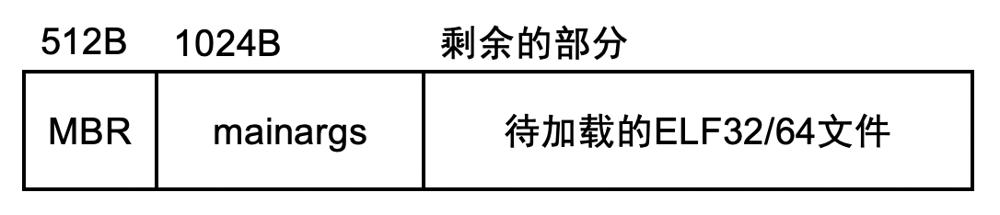

背景
程序 = 状态机
今天我们稍微回到一点 “操作系统”
- 这样大家可以愉快地做实验
- 下周继续并发
给大家一点时间体验 (并阅读理解) threads.h
- (并发编程入门真的很简单)
本次课内容与目标
调试固件 (Firmware)
- 理解操作系统是如何被启动的
- 学会使用 gdb (必备生存技能)
调试 “操作系统这个 C 程序”
- 消除 “操作系统” 的神秘感
- 学会阅读 Makefile (必备生存技能)
有关 “专业训练”
“写个操作系统” 好像很牛 X 的样子？
“写个操作系统” 好像很牛 X 的样子？ (cont'd)
十几年以前自己 xjbg 的内核跑起来的时候的确感觉很惊奇
- 浇盆冷水：但作为专业人士，根本不算什么 (trivial)
- “业余高手” vs. “职业选手”
「护球像梅西，射门像贝利」的金山区齐达内，满怀期待地去和儿童预备队比赛，结果被灌了 20 多球。韩寒：“被小学生支配的恐惧，而我也曾对那种力量，一无所知。”
什么是专业人士？
专业人士有正确的 “专业世界观” (和专业知识的积累和磨练有关)
- 驾驭复杂系统的能力
- 做什么是正确的
- 如何找到相关的部分
- 在 Linux Kernel 中找出和自己相关的代码；在 Intel 手册中找到需要的部分并正确理解；找到正确的工具
- 在没有工具的时候，怎么自己造世界上最好的工具 (research)
专业训练：例子
- 写 x86 模拟器的时候，不知道哪条指令错了，怎么办？ (difftest)
- mips32-nemu 成功启动 Linux Kernel
- 做操作系统实验的时候，如果遇到神秘 CPU Reset，怎么办？
- 《操作系统》课上完成的专业训练
如何通往专业之路？
❌ 踩坑 (自学成才)
- 我 2009 年学《操作系统》的时候，根本没有 toolchain 可言
- 迷之 8086 汇编，迷之 VirtualBox
- 全靠 trial-and-error
- 只会
printf调试
✅ 建立在前人经验的基础上
- 顶级研究论文 (OSDI, SOSP, ATC, EuroSys, ...)
- 久经考验的经典教学材料 (xv6, OSTEP, CSAPP, ...)
- 海量的开源工具 (GNU 系列, qemu, gdb, ...)
- 第三方资料，慎用 (tutorials, osdev wiki, ...)
大学的真正意义
将已有的知识和方法重新消化，为大家建立好 “台阶”，在有限的时间里迅速
赶上 几十年来建立的科学体系。
写操作系统的最大困难：下不了手
- 大家都说 “操作系统是 C 程序”
- 但我只会按一个键编译运行
- C 语言程序怎么运行在机器上？
- C 语言程序运行起来以后，什么能做、什么不能做？
“操作系统就是个 C 程序”
C 程序
我们已经知道如何写一个 “最小” 的 C 程序了：
#include 比较特殊的编译方式
$ gcc a.c -static -Wl,--entry=main
“程序 = 状态机” 没问题
但谁创建的这个状态机 ？？？- 当然是操作系统了……呃……
先有鸡还是先有蛋？
“启动” 状态机是由 “加载器” 完成的
加载器也是一段程序 (状态机)
这个程序由是由谁加载的？
……
硬件和软件的桥梁
Bare-Metal 与程序员的约定
为了让计算机能
- CPU reset 后，处理器处于某个确定的状态
- PC 指针一般指向一段 memory-mapped ROM
- ROM 存储了厂商提供的 firmware (固件)
- 处理器的大部分特性处于关闭状态
- 缓存、虚拟存储、……
- PC 指针一般指向一段 memory-mapped ROM
- Firmware
- 将用户数据加载到内存
- 例如存储介质上的第二级 loader
- 或者直接加载操作系统 (嵌入式系统)
- U-Boot: the universal boot loader
- 将用户数据加载到内存
x86 Family: CPU Reset 行为

CPU Reset (Intel® 64 and IA-32 Architectures Software Developer’s Manual, Volume 3A/3B)
- 寄存器会有初始状态
EIP = 0x0000fff0CR0 = 0x60000010- 16-bit 模式
EFLAGS = 0x00000002- interrupt disabled
- TFM (5,000 页 by 2019)
- 最需要的 Volume 3A 只有 468 页
CPU Reset 之后：发生了什么？
《计算机系统基础》：
- 从 PC (
CS:IP) 指针处取指令、译码、执行…… - 从 firmware 开始执行
ffff0通常是一条向 firmware 跳转的 jmp 指令

Firmware: BIOS vs. UEFI
- 都是主板/主板上外插设备的软件抽象
- 支持系统管理程序运行
- Legacy BIOS (Basic I/O System)
- UEFI (Unified Extensible Firmware Interface)
Legacy BIOS: 约定
Firmware 必须提供机制，将用户数据载入内存
- Legacy BIOS 把第一个可引导设备的第一个扇区加载到物理内存的
7c00位置- 此时处理器处于 16-bit 模式
- 规定
CS:IP = 0x7c00,(R[CS] << 4) | R[IP] == 0x7c00- 可能性1：
CS = 0x07c0, IP = 0 - 可能性2：
CS = 0, IP = 0x7c00
- 可能性1：
- 其他没有任何约束
能不能看一下代码？
Talk is cheap. Show me the code. ——Linus Torvalds
有没有可能我们真的去看从 CPU Reset 以后每一条指令的执行？
- 模拟方案：QEMU
- 传奇黑客、天才程序员 Fabrice Bellard 的杰作
- QEMU, A fast and portable dynamic translator (USENIX ATC'05)
- Android Virtual Device, VirtualBox, ... 背后都是 QEMU
- 传奇黑客、天才程序员 Fabrice Bellard 的杰作
- 真机方案：JTAG (Joint Test Action Group) debugger
- 一系列 (物理) 调试寄存器，可以实现 gdb 接口 (!!!)
调试 QEMU: 确认 Firmware 的行为
亲眼确认 Firmware 到底是不是会加载启动盘第一个扇区到
0x7c00内存位置！
调试 QEMU 模拟器: run-qemu.sh 和 hello.img
- 查看 CPU Reset 后的寄存器
info registers
- 查看
0x7c00内存的加载watch *0x7c00- 查看当前指令
x/i ($cs * 16 + $rip) - 打印内存
x/16xb 0x7c00
- 进入
0x7c00代码的执行b *0x7c00,c(撒花)
鸡和蛋的问题解决
有个原始的鸡：Firmware
- 代码直接存在于硬件里
- CPU Reset 后 Firmware 会执行
- 加载 512 字节到内存 (Legacy Boot)
- 然后功成身退
Firmware 的另一用处
- 放置一些 “绝对安全的代码”
- BIOS 中断 (Hello World 是如何被打印的)
- ARM TrustZone
- Intel ME (不太正确的 “Ring -3”)
- 据说 “每个 Intel 芯片组里都藏着一个 Minix3 操作系统”
小插曲：Firmware 的病毒 (1998)
Firmware 通常是只读的 (当然……)
- Intel 430TX (Pentium) 芯片组允许
写入 Flash ROM - 只要向 Flash BIOS 写入特定序列，Flash ROM 就变为可写
- 留给 firmware 更新的通道
- 要得到这个序列其实并不困难
- 似乎文档里就有，还可以解析 BIOS 的更新程序
- Boom…… (CPU RESET 之后就……了)
- 只要向 Flash BIOS 写入特定序列，Flash ROM 就变为可写
CIH 的作者陈盈豪被逮捕，但并未被定罪

计算机系统 = 状态机
“计算机系统” 的状态机已经启动
计算机系统启动后的初始状态？
我们已经知道：
- 系统开机后处理器位于 CPU Reset 的状态
- 内存有一部分是 Firmware (PC 指向 Firmware)
还有一部分状态
计算机系统还有很多状态在 I/O 设备 (磁盘) 里！ make ARCH=x86_64-qemu会创建如下格式的磁盘镜像

操作系统：是个 C 程序
一个迷你 “操作系统” thread-os.c
- make 会得到一个 “磁盘镜像”，好像魔法一样
- 就跟你们第一次用 IDE 的时候按一个键就可以编译运行一样
int main() {
cte_init(on_interrupt);
for (int i = 0; i < LENGTH(tasks); i++) {
Task *task = &tasks[i];
Area stack = (Area) { &task->context + 1, task + 1 };
task->context = kcontext(stack, task->entry, (void *)task->name);
task->next = &tasks[(i + 1) % LENGTH(tasks)];
}
mpe_init(mp_entry);
}
镜像生成的全过程
让我们观察 AbstractMachine 程序的编译过程：
make -nB \
| grep -ve '^\(\#\|echo\|mkdir\|make\)' \
| sed "s#$AM_HOME#\$AM_HOME#g" \
| sed "s#$PWD#.#g" \
| vim -
- Command line tricks
make -nB(RTFM)- grep: 文本过滤，省略了一些干扰项
- echo (提示信息), mkdir (目录建立), make (sub-goals)
- sed: 让输出更易读
- 将绝对路径替换成相对路径
- vim: 更舒适的编辑/查看体验
镜像生成的全过程 (cont'd)
如果使用 “土办法”，你很可能被淹没在 Makefile 中
- 读懂 Makefile 需要 STFW, RTFM，大量的精力
- 虽然花点时间读是值得的，但很可能读了很久都没读到重要的地方
花一点时间想 “应该怎么做”
- 花几分钟创建一个小工具：“AbstractMachine 构建理解工具”
- UNIX Philosophy: keep it simple, stupid
- everything is a file; write things to work together using text interface
- Get out of your comfort zone
镜像生成的全过程 (cont'd)
想要看得更清楚一些？
:%s/ /\r /g- 每一个命令就像 “一句话”
编译
-std=gnu11,m64,-mno-sse,-I,-D, ... (这对你配置 vscode 很重要)
链接
-melf_x86_64,-N,-Ttext-segment=0x00100000- 链接了 C 代码对应的
.o和库 (am-x86_64-qemu.a,klib-x86_64-qemu.a)
彩蛋
make html
系好安全带，出发！
(1) 启动加载器 (Boot Loader)
512 字节中的代码，假设了镜像格式 (真正的的加载器有很多 stages)
- 16-bit → 32-bit
- ELF32/64 的加载器
- 按照约定的磁盘镜像格式加载
代码讲解：
am/src/x86/qemu/boot/start.S和main.c- 它们都可以调试！
if (elf32->e_machine == EM_X86_64) {
((void(*)())(uint32_t)elf64->e_entry)();
} else {
((void(*)())(uint32_t)elf32->e_entry)();
}
(2) ELF 文件开始执行: start64.S
Boot loader 执行的最后一句代码：
((void(*)())(uint32_t)elf64->e_entry)();
因为 ELF 文件已经加载到内存，这将跳转到 _start
- 代码位于
start64.S(切换到 64-bit 模式)- 设置 GDT, PML4, EFER.LME
ljmp跳转到 64-bit 代码执行 (_start64)- 设置好段寄存器后，跳转到 C 代码
_start_c执行
(3) C 代码开始执行: trm.c
巨多无比难以理解的代码
- 完成硬件的初始化
- 没关系……不用知道它们是什么，只要知道它们是 RTFM/STFW 来得就行
完成初始化后，执行一次堆栈切换调用，跳转到 call_main (wrapper) 执行
这个技巧大家在 M2 中会用到！
static void call_main(const char *args) {
_halt(main(args));
}
(4) 操作系统：开始执行
main 在被调用时：
- 静态代码、数据均可用；剩余可用物理内存区间为
_heap - 中断处于关闭状态 (
FL_IFcleared) - 有 8 KiB 的初始堆栈 (位于
struct cpu_local中) - “操作系统” 就开始执行了
你也可以实现直接在硬件上运行的游戏等任何程序
- 调用 AbstractMachine API 访问 I/O 设备、中断、虚拟内存、多处理器……
总结
总结
本次课内容与目标
- 调试固件 (Firmware)
- 理解操作系统是如何被启动的
- 学会使用 gdb (必备生存技能)
- 调试 “操作系统这个 C 程序”
- 消除 “操作系统” 的神秘感
- 学会阅读 Makefile (必备生存技能)
Take-away messages
- 计算机系统 = 状态机 (回忆 Reset 时的状态)
- 程序 = 状态机 (回忆加载瞬间的状态)
- 计算机系统 = 程序 (对哦，比如模拟器……)